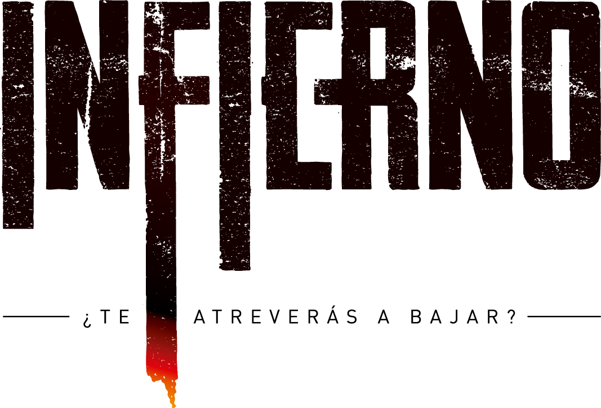

I am José Daniel Vélez Sánchez, a passionate contemporary dancer with a vibrant and creative career. Graduated from the Instituto Superior de Artes Escénicas (ISAE) in Guadalajara, Jal. in 2018, I have dedicated my life to artistic expression through movement. My academic background is complemented by a Diploma in Physical Conditioning focused on Fitness, as well as residencies and workshops with renowned choreographers.
From creating and directing "INFIERNO" in 2018, an innovative staging based on "The Divine Comedy," to my collaboration with Korean choreographer Da Soul Chung in the remounting of "Dusty Old Things" during the AGAVE Scenic Exchange in 2019, each project has been an opportunity to explore new forms of art and connect with audiences in unique ways.
Click on the image to see "INFIERNO"
I am an instructor in the Creative Bodies Diploma, passionately teaching Jazz technique. I have participated in a wide range of stage productions, from musicals to artistic shows, always seeking to inspire and motivate my students and colleagues.
My dance education includes a Choreographic Workshop with Mauricio Nava and a Jazz Masterclass focused on musicals with Tere Rios and Edgar Reyes. I have received multiple awards in Jazz and Contemporary Dance competitions, standing out as a committed and talented artist in the local scene.